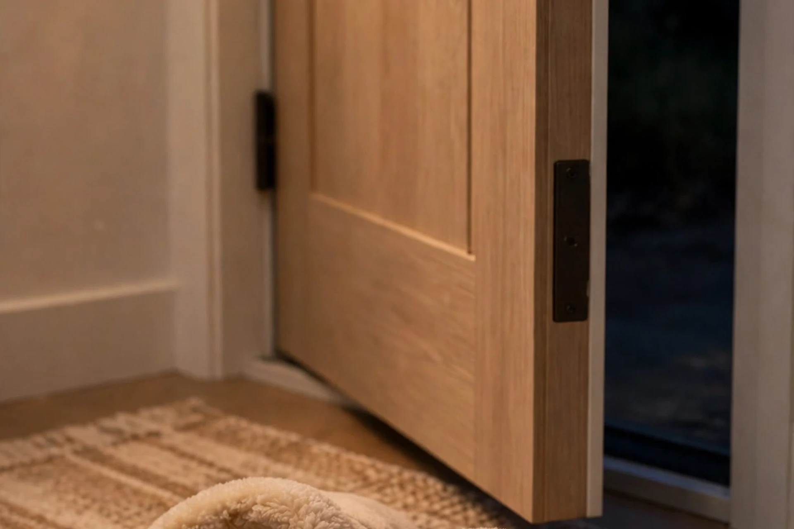

この記事の要点
- 夜、家の中を歩くたびに、自分の足音が下の階に響いていないか気になることはありませんか？
- 足音は、空気を通る声とは少し違います。
- まず、歩き方そのものを見直してみてください。
💡 まず知っておきたいこと：足音は、床を通って伝わります
足音は、空気を通る声とは少し違います。足が床に着いたときの衝撃が、床や建物の構造を通って、下の階に伝わる場合があります。ドスンという低い音は、壁や床を通りやすい傾向があります。どのくらい響くかは、建物の構造や床の材質、部屋の使い方によって違います。普通に歩いているつもりでも、下の階では大きく聞こえる場合があります。だからこそ、足音の対策は、音を小さくすることと、衝撃をやわらげることの、両方から考えるのが筋道です。自分の部屋でマスキング音を流しても、自分の足音が下の階に伝わる量は減りません。マスキング音は、聞く側のための音です。
💡 歩き方と、足元の工夫
まず、歩き方そのものを見直してみてください。かかとから強く着地する歩き方は、衝撃が大きくなりやすい傾向があります。足の裏全体で、ゆっくりと着地するように意識するだけでも、ドスンという感じは変わる場合があります。夜や早朝は、特にゆっくり歩く、という時間帯の工夫も大切です。足元では、底のやわらかいスリッパを履く、という方法があります。硬い底のスリッパや、かかとのある靴で家の中を歩くと、音が大きくなりやすい傾向があります。裸足が必ずしも静かとは限りません。足の裏の汗や、床の材質によって、ペタペタという音が出る場合もあります。自分の部屋の床に合う、やわらかい履物を選ぶのが、無理なく続けやすい方法です。
💡 床の工夫：ラグやマットで、衝撃をやわらげる
次に、床の工夫です。よく歩く場所に、ラグやカーペットを敷くことで、足が床に着くときの衝撃をやわらげることができます。廊下やキッチン、寝室への通り道など、夜によく通る場所が、対策しやすい場所です。家具を動かすときは、引きずらずに持ち上げる、脚にフェルトを貼る、という工夫も、ガタンという音を小さくする方法です。
対策用のマットも、いろいろな種類があります。たとえば、ジョイントマットのように、床に敷き詰めるもの、防音をうたったカーペットやマット、洗濯機などの下に敷く防振マットなどです。どれも、音を完全になくすものではありません。厚さや材質、敷く場所によって、感じ方は違います。選ぶときは、表示の数字だけではなく、自分の部屋の床の材質に合っているか、歩く場所に敷ける大きさか、掃除や洗濯がしやすいか、賃貸で原状回復ができるか、という点も大切です。
🕰️ 時間帯と、周りとのコミュニケーション
夜遅くや早朝の、大きな足音を避ける、という時間帯の工夫も大切です。室内での運動や、子どもが走り回る時間帯も、気になる場合は、時間帯や場所を分けてみてください。引っ越しのときの挨拶や、音が気になるときの管理会社への相談も、トラブルを小さくする方法の1つです。苦情を受けたときは、まず事実を確認し、感情的にならずに、管理会社を通して話し合うのが無難です。仕返しのように大きな音を出すことは、トラブルを大きくするだけです。避けてください。
⚠️ 注意
このページの内容は、法律の判断ではありません。近隣とのトラブルについては、法律の判断が必要な場合があります。床や壁の大きな工事が必要な場合は、管理会社や専門家への相談をご検討ください。マットやラグなどのグッズで、すべての足音を消せるわけではありません。目安として、無理のない範囲で試してみてください。
参考：商品の例（広告）
このページの内容に合う商品の例です。購入する場合は、商品ページの仕様や価格をご確認ください。

1級防音ジョイントマット（タンスのゲン）を楽天市場で見る（広告）
価格：2,499円〜（畳数により異なります。2026年10月28日確認時点の表示価格。価格や在庫は変わる場合があります。商品ページでご確認ください。）